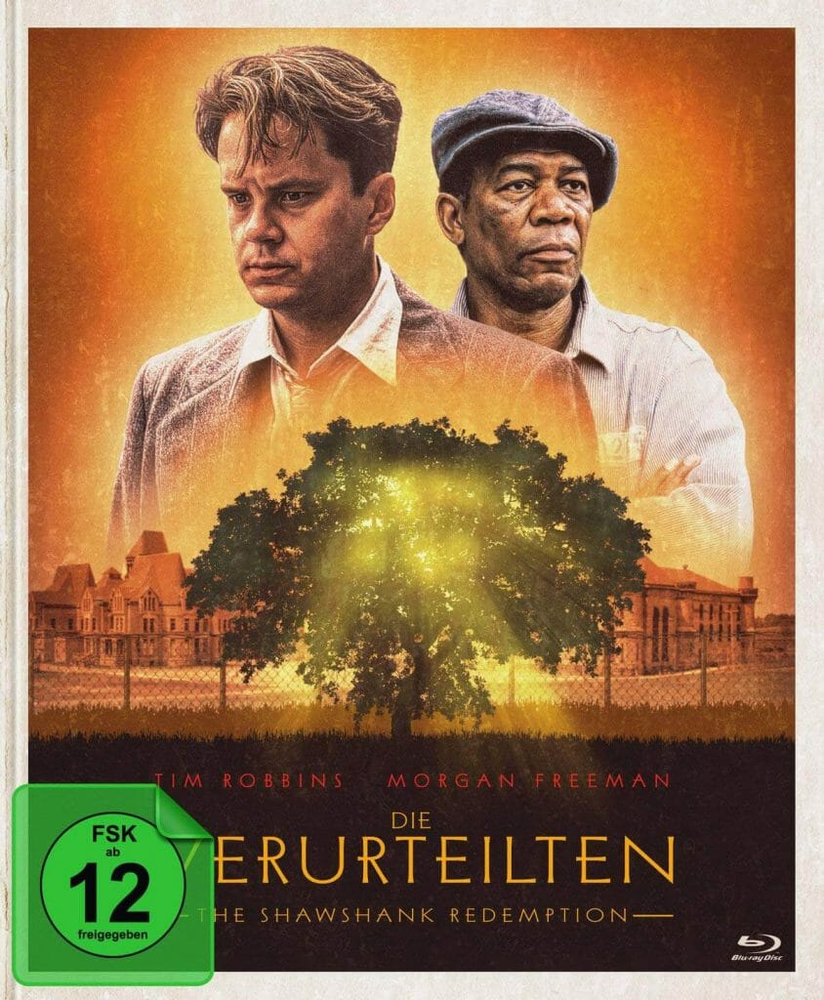

My favorite movie

Short summary
The Shawshank Redemption is a 1994 American drama film written and directed by Frank Darabont, based on the 1982 Stephen King novella Rita Hayworth and Shawshank Redemption.
The film tells the story of banker Andy Dufresne (Tim Robbins), who is sentenced to life in Shawshank State Penitentiary for the murders of his wife and her lover, despite his claims of innocence.
Over the following two decades, he befriends a fellow prisoner, contraband smuggler Ellis "Red" Redding (Morgan Freeman), and becomes instrumental in a money laundering operation led by the prison
warden Samuel Norton (Bob Gunton).William Sadler, Clancy Brown, Gil Bellows, and James Whitmore appear in supporting roles.